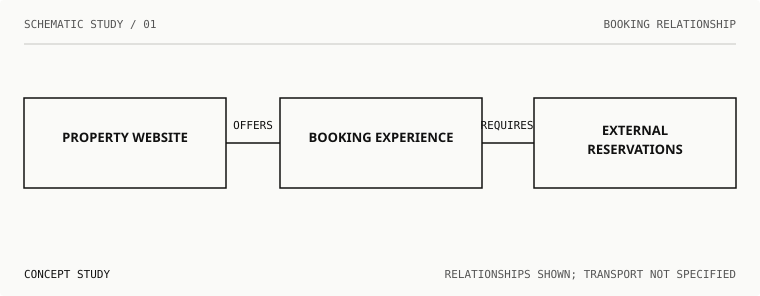
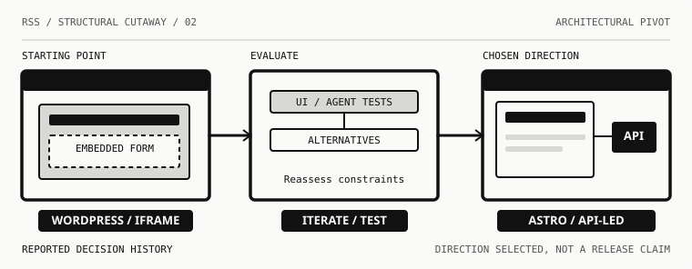
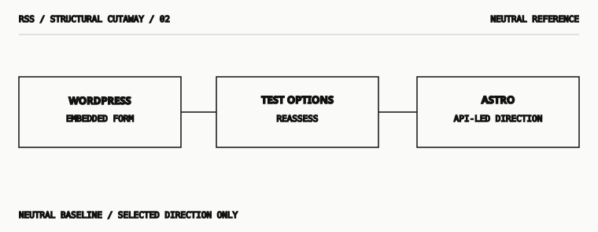
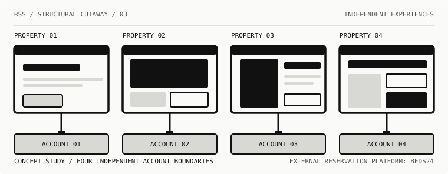
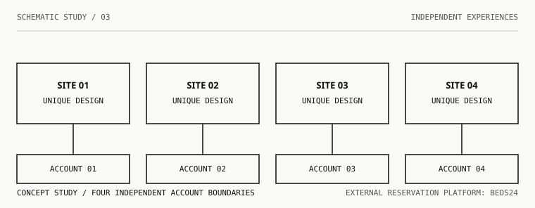
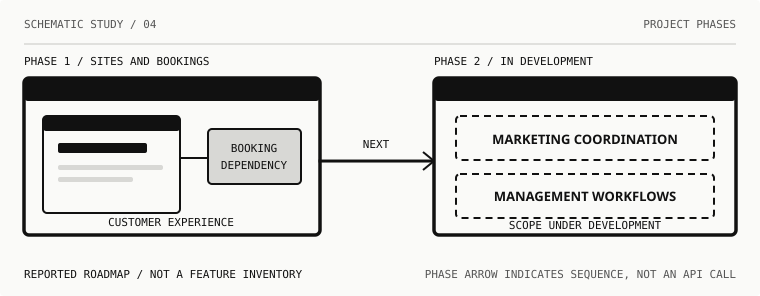
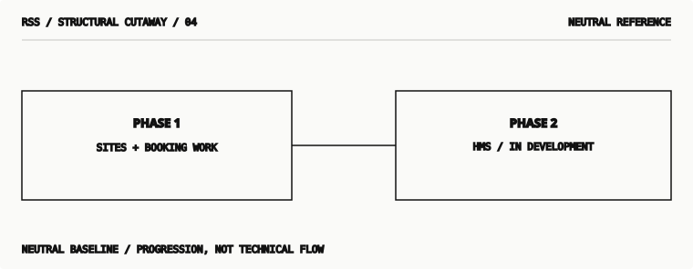
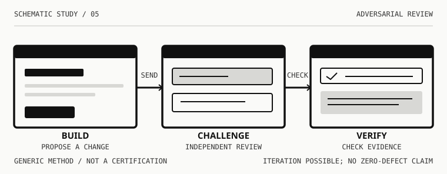
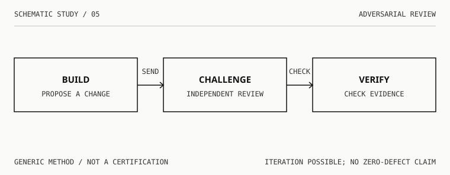

01 / STUDY
Booking relationship
How a guest-facing website offers a booking journey that depends on an external reservation account.
 View original at native size
View original at native size

View original at native size02 / STUDY
Architectural pivot
A decision history: the legacy WordPress/iframe approach, evaluation, and the Astro/API-led direction.


View original at native size

View original at native size03 / STUDY
Four independent properties
Four distinct property interfaces and their independent reservation accounts.


View original at native size

View original at native size04 / STUDY
HMS second phase
Site and booking work beside an HMS workstream that remains in development.


View original at native size

View original at native size05 / STUDY
Adversarial review
Builder, independent challenge, and evidence verification as separate responsibilities.


View original at native size

View original at native sizeS / M / L / THREE DISTINCT COMPOSITIONS
The booking illustration at different sizes
Each size is drawn with different levels of detail. Small is not a compressed version of large. Select an illustration to open it at native size.


RESEARCH / NOT A PACKAGE RELEASE
What these drawings do—and do not—establish.
Lines communicate responsibilities, dependencies or process stages, not automatically confirmed network traffic. Proposed HMS functions are not deployed features. Visual comprehension, responsive clarity and accessibility are under review. Neither the public package v0.1 nor the private production website is modified by this preview.
Research draft PR · Source-of-truth study notes · Reader testing protocol